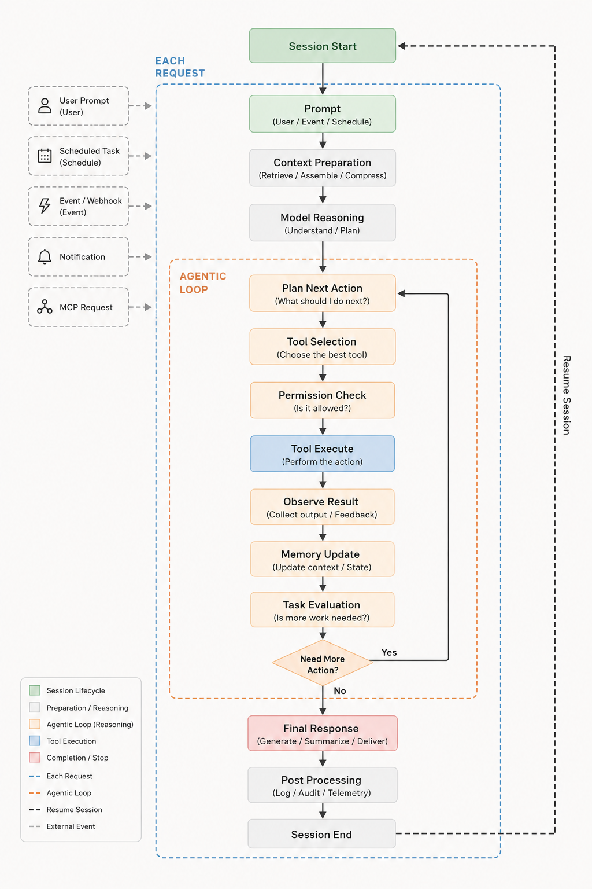

每一次請求都走同一條路徑：準備上下文、對任務進行推理，接著反覆呼叫工具直到工作完成。這就是每一次 Arlo 執行背後的核心處理邏輯 —— 無論是在 TUI、單次 CLI 指令，或函式庫中皆然。

一個回合可能由使用者提示、排程任務、事件或 webhook、通知，或 MCP 請求啟動。無論來源為何，都進入同一條管線 —— 沒有任何來源享有私有的程式路徑。
每個步驟都以事件形式串流輸出，這正是 TUI 即時渲染的內容，也是嵌入 Arlo 的應用程式可以訂閱的對象。 看看架構怎麼設計 →